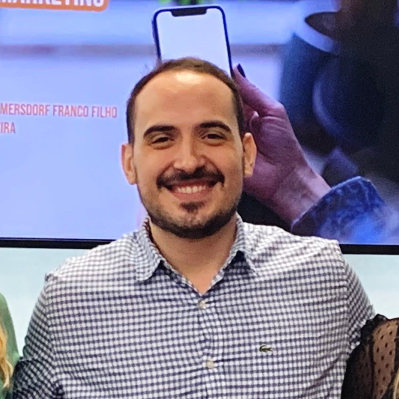

About me
Hello! My name is Carlos Augusto Willmersdorf Franco Filho, but feel free to call me Gus.
I'm Brazilian and, ever since I was born, I have lived in Brazil and dreamed of living abroad. About 3 years ago, I became dissatisfied with my career path as a Copywriter and decided to explore a transition to the UX Design field.
"Innovation distinguishes between a leader and a follower." - Steve Jobs
That’s how I found the IMD program at Algonquin College. While looking at different programs, I saw this one as an opportunity to explore the creative part of tech and live in a different country for a while. The IMD program is the 3rd program I’ve enrolled in, but this one feels different because it’s very hands-on from day one, and that makes me excited!
Hobbies
- Watching movies and TV shows.
- Going to the gym.
- Enjoying a night at the club.
- Playing board games.